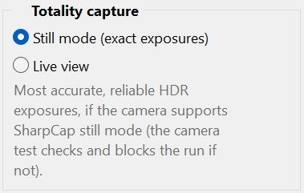

The way HelioMaker captures the HDR brackets around the central phase matters. There are two modes, and the right one for you depends on your camera.
You choose in Plan preferences: Still mode (exact exposures) or Live view. On a total eclipse the choice governs the thin crescent and C2/C3 bracket span, which is the most demanding HDR part of the whole event.
The group and the benchmark name that window in the eclipse's own words, so the exact labels depend on the plan you have open:
| Eclipse | Preferences group | Benchmark result reads |
|---|---|---|
| Total | Totality capture | “~N sets in totality” |
| Annular | Annularity capture | “~N sets in annularity” |
| Partial | Central phase capture | “~N sets in the central phase” |
The screenshots and the worked examples below are from a total eclipse, which is the most demanding case. Read “totality” in them as “the central capture window” when your plan is annular or partial.

In Still mode the camera takes a discrete still image for each exposure, so each frame is intended to integrate for the requested exposure. On cameras that implement SharpCap Still mode reliably, this produces accurate HDR brackets for the corona, prominences and diamond ring. Still mode can also fit more complete HDR sets into the central capture window. The system benchmark test reports the measured result for each mode, using the wording for your eclipse type from the table above, so use its result for your camera.
Live view is based on a continuous video stream. Changing to the next exposure in an HDR bracket is an expensive operation that costs dropped frames. The stream has to settle to the new exposure, and frames captured during that settle are stale and must be discarded.
To mitigate that, HelioMaker records several frames of the same exposure for each short rung of the bracket. This is useful for short exposures of roughly two seconds and below, where taking a few extra frames is cheap. Through the central capture window you therefore get runs of short frames at each exposure (on a total eclipse that window runs from C2 to C3). That keeps the short rungs honest, but it means live view writes a lot of similar frames, spends more of the capture budget on settling, and may complete fewer HDR sets than Still mode. Longer exposures cannot be duplicated as cheaply.
| Still mode (exact exposures) | Live view | |
|---|---|---|
| Exposure handling | Each requested exposure is a discrete still capture. | Relies on discarding stale frames after each exposure change. |
| HDR brackets | Uses one still capture for each requested bracket frame. | Captures several frames for each short bracket rung. |
| Central-phase throughput | Usually more complete HDR sets in the window. | Time lost to exposure settling; many duplicate short frames written. |
| Camera support | Requires reliable SharpCap Still mode. | Avoids switching into SharpCap Still mode. |
| Benchmark behaviour | Qualification can block the run if the switch fails. | Benchmark only warns; never blocks on mode switching. |
Search the SharpCap and astronomy imaging forums for your exact camera model and its Still mode reliability. Other imagers' experience is the fastest way to learn whether your camera is a safe candidate.
With the camera connected, open System benchmark test... in Plan preferences. On a Still mode plan it qualifies Still mode: it switches the camera into still mode, captures, and checks the frames are correct, blocking the run if that fails. It also reports Still versus Live as “ms/frame, ~N sets” (named for your eclipse type, per the table above) so you can compare, plus a capture drive benchmark. Run it on your actual eclipse camera and capture configuration.
If the benchmark qualifies your camera and your other testing indicates it is reliable, choose Still mode (exact exposures) in the capture group named for your eclipse type (Totality capture, Annularity capture or Central phase capture). You are accepting the measured risk in exchange for more direct exposure control.
If your camera cannot switch modes reliably, or you prefer to avoid that mode switch, choose Live view. The benchmark then only warns instead of blocking, and the central phase is captured in Live view using the repeated frame mitigation described above. It is the fallback that avoids Still mode switching.